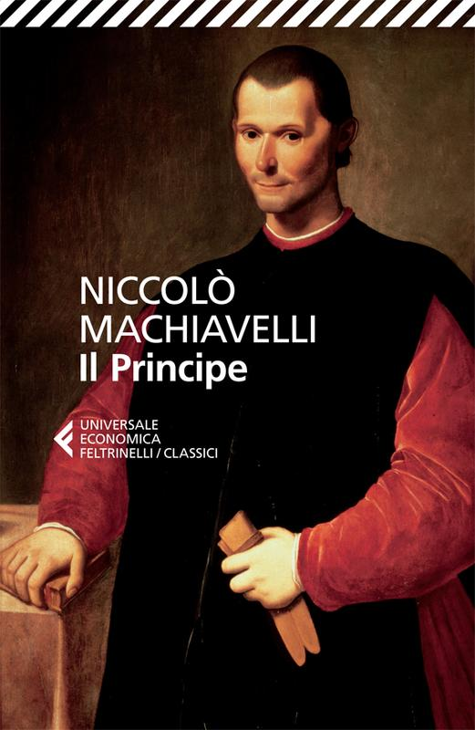

Scritto nel 1513 e dedicato a Lorenzo de' Medici, il trattato si propone come una guida pratica per chi detiene o aspira al potere, analizzando con lucidità spietata i diversi tipi di principati, le strategie per conquistarli e, soprattutto, per mantenerli saldi nel tempo. Machiavelli abbandona ogni idealizzazione morale della politica per osservarla così com'è realmente esercitata, distinguendo nettamente ciò che un governante dovrebbe fare da ciò che è costretto a fare per sopravvivere in un mondo di rivali, tradimenti e fortuna capricciosa. Celebre per aver introdotto l'idea che il fine giustifichi i mezzi, il libro resta uno dei testi fondativi del pensiero politico moderno — capace ancora oggi di dividere tra chi lo considera un manuale cinico del potere e chi vi legge, invece, un'analisi coraggiosamente onesta della natura umana e delle sue debolezze.
Devo essere onesta: l'ho trovato noioso, e ora capisco perché si legga a scuola più per dovere che per piacere. La lettura non è stata affatto scorrevole, sia per il mio scarso interesse verso quella parte storica, sia per il fatto che si tratti del testo originale dell'epoca, con un linguaggio decisamente lontano da quello a cui sono abituata.
Nonostante tutto, sono arrivata fino alla fine — e in un certo senso ringrazio me stessa per averlo fatto: l'ho letto proprio perché penso che me lo ritroverò a scuola quest'anno, quindi se dovrà succedere, almeno sarà la seconda volta che me lo trovo davanti, e questo lo renderà sicuramente meno traumatico.
"Debbe, per tanto, uno principe non si curare della infamia di crudele, per tenere e’ sudditi sua uniti et in fede; perché, con pochissimi esempli sarà più pietoso che quelli e’ quali, per troppa pietà, lasciono seguire e’ disordini, di che ne nasca occisioni o rapine: perché queste sogliono offendere una universalità intera, e quelle esecuzioni che vengono dal principe offendono uno particulare."
"Ognuno vede quello che tu pari, pochi sentono quello che tu se’; e quelli pochi non ardiscano opporsi alla opinione di molti che abbino la maestà del- lo stato che li difenda: e nelle azioni di tutti li uomini, emassime de’ principi, dove non è iudizio da reclamare, massime de’ principi, dove non è iudizio da reclamare, si guarda al fine."
"E sempre interverrà che colui che non è amico ti ricercherà della neutralità, e quello che ti è amico ti richiederà che ti scuopra con le arme. "
"Il quale partito, quando mancano li altri, è buono; ma è bene male avere lasciati li altri remedii per quello: perché non si vorrebbe mai cadere, per credere di trovare chi ti ricolga."
"Da questo ancora depende la variazione del bene: perché, se uno che si governa con respetti e pazienzia, e' tempi e le cose girono in modo che il governo suo sia buono, e' viene felicitando; ma, se e' tempi e le cose si mutano, rovina, perché non muta modo di procedere."
"Virtù contro a furore
Prenderà l'arme, e fia el combatter corto;
Ché l'antico valore
Nell'italici cor non è ancor morto."